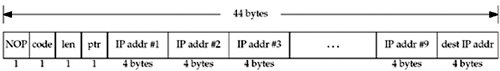
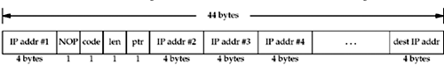

| [ Team LiB ] |
|
27.3 IPv4 Source Route OptionsA source route is a list of IP addresses specified by the sender of the IP datagram. If the source route is strict, then the datagram must pass through each listed node and only the listed nodes. That is, all the nodes listed in the source route must be neighbors. But if the source route is loose, the datagram must pass through each listed node, but can also pass through other nodes that do not appear in the source route.
IPv4 source routes are called source and record routes (LSRR for the loose option and SSRR for the strict option), because as a datagram passes through all the listed nodes, each one replaces its listed address with the address of the outgoing interface. This allows the receiver to take this new list and reverse it to follow the reverse path back to the sender. Examples of these two source routes, along with the corresponding tcpdump output, are found in Section 8.5 of TCPv1. We specify a source route as an array of IPv4 addresses, prefixed by three one-byte fields, as shown in Figure 27.1. This is the format of the buffer that we will pass to setsockopt. Figure 27.1. Passing a source route to the kernel. We place an NOP before the source route option, which causes all the IP addresses to be aligned on a four-byte boundary. This is not required, but takes no additional space (the IP options are always padded to be a multiple of four bytes) and aligns the addresses. In this figure, we show up to 10 IP addresses in the route, but the first listed address is removed from the source route option and becomes the destination address of the IP datagram when it leaves the source host. Although there is room for only 9 IP addresses in the 40-byte IP option space (do not forget the 3-byte option header that we are about to describe), there are actually 10 IP addresses in an IPv4 header when the destination address is included. The code is either 0x83 for an LSRR option or 0x89 for an SSRR option. The len that we specify is the size of the option in bytes, including the three-byte header, and including the extra destination address at the end. It will be 11 for a route consisting of one IP address, 15 for a route consisting of two IP addresses, and so on, up to a maximum of 43. The NOP is not part of the option and is not included in the len field, but is included in the size of the buffer that we specify to setsockopt. When the first address in the list is removed from the source route option and placed into the destination address field of the IP header, this len value is decremented by four (Figures 9.32 and 9.3 of TCPv2). ptr is a pointer which contains the offset of the next IP address to be processed in the route, and we initialize it to 4, which points to the first IP address. The value of this field increases by four as the datagram is processed by each listed node. We now develop three functions to initialize, create, and process a source route option. Our functions handle only a source route option. While it is possible to combine a source route with other IP options (such as router alert), such a combination is rare. Figure 27.2 is the first function, inet_srcrt_init, along with some static variables that are used as an option is being built. Figure 27.2 inet_srcrt_init function: initializes before storing a source route.ipopts/sourceroute.c
1 #include "unp.h"
2 #include <netinet/in_systm.h>
3 #include <netinet/ip.h>
4 static u_char *optr; /* pointer into options being formed */
5 static u_char *lenptr; /* pointer to length byte in SRR option */
6 static int ocnt; /* count of # addresses */
7 u_char *
8 inet_srcrt_init(int type)
9 {
10 optr = Malloc(44); /* NOP, code, len, ptr, up to 10 addresses */
11 bzero(optr, 44); /* guarantees EOLs at end */
12 ocnt = 0;
13 *optr++ = IPOPT_NOP; /* NOP for alignment */
14 *optr++ = type ? IPOPT_SSRR : IPOPT_LSRR;
15 lenptr = optr++; /* we fill in length later */
16 *optr++ = 4; /* offset to first address */
17 return (optr - 4); /* pointer for setsockopt() */
18 }
Initialize10–17 We allocate a maximum sized buffer of 44 bytes and set it to 0. The value of the EOL option is 0, so this initializes the entire option to EOL bytes. We then set up the source route header. As shown in Figure 27.1, we first use an NOP for alignment, then the type of source route (loose or strict), the length, and the pointer. We save a pointer to the len field and will store this value as each address is added to the list. The pointer to the option is returned to the caller and will be passed as the fourth argument to setsockopt. The next function, inet_srcrt_add, adds one IPv4 address to the source route being constructed. Figure 27.3 inet_srcrt_add function: adds one IPv4 address to a source route.ipopts/sourceroute.c
19 int
20 inet_srcrt_add(char *hostptr)
21 {
22 int len;
23 struct addrinfo *ai;
24 struct sockaddr_in *sin;
25 if (ocnt > 9)
26 err_quit("too many source routes with: %s", hostptr);
27 ai = Host_serv(hostptr, NULL, AF_INET, 0);
28 sin = (struct sockaddr_in *) ai->ai_addr;
29 memcpy(optr, &sin->sin_addr, sizeof(struct in_addr));
30 freeaddrinfo(ai);
31 optr += sizeof(struct in_addr);
32 ocnt++;
33 len = 3 + (ocnt * sizeof(struct in_addr));
34 *lenptr = len;
35 return (len + 1); /* size for setsockopt() */
36 }
Argument19–20 The argument points to either a hostname or a dotted-decimal IP address. Check for overflow25–26 We check that too many addresses are not specified and then initialize if this is the first address. Obtain binary IP address and store in route27–35 Our host_serv function handles either a hostname or a dotted-decimal string and we store the resulting binary address in the list. We update the len field and return the total size of the buffer (including the NOP) that the caller must pass to setsockopt. When a received source route is returned to the application by getsockopt, the format is different from Figure 27.1. We show the received format in Figure 27.4. Figure 27.4. Format of source route option returned by getsockopt. First, the order of the addresses has been reversed by the kernel from the ordering in the received source route. What we mean by "reversed" is that if the received source route contains the four addresses A, B, C, and D, in that order, the reverse of this route is D, C, B, and then A. The first 4 bytes contain the first IP address in the list, followed by a 1-byte NOP (for alignment), followed by the 3-byte source route option header, followed by the remaining IP addresses. Up to 9 IP addresses can follow the 3-byte header, and the len field in the returned header will have a maximum value of 39. Since the NOP is always present, the length returned by getsockopt will always be a multiple of 4 bytes.
This returned format differs from the format that we pass to setsockopt. If we wanted to convert the format in Figure 27.4 to the format in Figure 27.1, we would have to swap the first 4 bytes with the following 4 bytes and add 4 to the length field. Fortunately, we do not have to do this, as Berkeley-derived implementations automatically use the reverse of a received source route for a TCP socket. That is, the information shown in Figure 27.4 is returned by getsockopt for our information only. We do not have to call setsockopt to tell the kernel to use this route for IP datagrams sent on the TCP connection; the kernel does that automatically. We will see an example of this shortly with our TCP server. The next of our source route functions takes a received source route, in the format shown in Figure 27.4, and prints the information. We show our inet_srcrt_print function in Figure 27.5. Save first IP address, skip any NOPs43–45 The first IP address in the buffer is saved and any NOPs that follow are skipped. Figure 27.5 inet_srcrt_print function: prints a received source route.ipopts/sourceroute.c
37 void
38 inet_srcrt_print(u_char *ptr, int len)
39 {
40 u_char c;
41 char str[INET_ADDRSTRLEN];
42 struct in_addr hop1;
43 memcpy(&hop1, ptr, sizeof(struct in_addr));
44 ptr += sizeof(struct in_addr);
45 while ( (c = *ptr++) == IPOPT_NOP) ; /* skip any leading NOPs */
46 if (c == IPOPT_LSRR)
47 printf("received LSRR: ");
48 else if (c == IPOPT_SSRR)
49 printf("received SSRR: ");
50 else {
51 printf("received option type %d\n", c);
52 return;
53 }
54 printf("%s ", Inet_ntop(AF_INET, &hop1, str, sizeof(str)));
55 len = *ptr++ - sizeof(struct in_addr); /* subtract dest IP addr */
56 ptr++; /* skip over pointer */
57 while (len > 0) {
58 printf("%s ", Inet_ntop(AF_INET, ptr, str, sizeof(str)));
59 ptr += sizeof(struct in_addr);
60 len -= sizeof(struct in_addr);
61 }
62 printf("\n");
63 }
Check for source route option46–62 We only print the information for a source route, and from the three-byte header, we check the code, fetch the len, and skip over the ptr. We then print all the IP addresses that follow the three-byte header, except the destination IP address. ExampleWe now modify our TCP echo client to specify a source route and our TCP echo server to print a received source route. Figure 27.6 is our client. Process command-line arguments12–26 We call our inet_srcrt_init function to initialize the source route, with the type of route specified by either the -g option (loose) or the -G option (strict). 27–33 If the ptr pointer is set, a source route option was specified and we add all the specified intermediate hops to the source route that we allocated above with our inet_srcrt_add function. If ptr is not set, but there is more than one argument remaining on the command line, the user specified a route without specifying whether it is loose or strict, so we exit with an error. Figure 27.6 TCP echo client that specifies a source route.ipopts/tcpcli01.c
1 #include "unp.h"
2 int
3 main(int argc, char **argv)
4 {
5 int c, sockfd, len = 0;
6 u_char *ptr = NULL;
7 struct addrinfo *ai;
8 if (argc < 2)
9 err_quit("usage: tcpcli01 [ -[gG] <hostname> ... ] <hostname>");
10 opterr = 0; /* don't want getopt() writing to stderr */
11 while ( (c = getopt(argc, argv, "gG")) != -1) {
12 switch (c) {
13 case 'g': /* loose source route */
14 if (ptr)
15 err_quit("can't use both -g and -G");
16 ptr = inet_srcrt_init(0);
17 break;
18 case 'G': /* strict source route */
19 if (ptr)
20 err_quit("can't use both -g and -G");
21 ptr = inet_srcrt_init(1);
22 break;
23 case '?':
24 err_quit("unrecognized option: %c", c);
25 }
26 }
27 if (ptr)
28 while (optind < argc - 1)
29 len = inet_srcrt_add(argv[optind++]);
30 else if (optind < argc - 1)
31 err_quit("need -g or -G to specify route");
32 if (optind != argc - 1)
33 err_quit("missing <hostname>");
34 ai = Host_serv(argv[optind], SERV_PORT_STR, AF_INET, SOCK_STREAM);
35 sockfd = Socket(ai->ai_family, ai->ai_socktype, ai->ai_protocol);
36 if (ptr) {
37 len = inet_srcrt_add(argv[optind]); /* dest at end */
38 Setsockopt(sockfd, IPPROTO_IP, IP_OPTIONS, ptr, len);
39 free(ptr);
40 }
41 Connect(sockfd, ai->ai_addr, ai->ai_addrlen);
42 str_cli(stdin, sockfd); /* do it all */
43 exit(0);
44 }
Handle destination address and create socket34–35 The final command-line argument is the hostname or dotted-decimal address of the server and our host_serv function processes it. We are not able to call our tcp_connect function because we must specify the source route between the calls to socket and connect. The latter initiates the three-way handshake and we want the initial SYN and all subsequent packets to use this source route. 36–42 If a source route is specified, we must add the server's IP address to the end of the list of IP addresses (Figure 27.1). setsockopt installs the source route for this socket. We then call connect, followed by our str_cli function (Figure 5.5). Our TCP server is almost identical to the code shown in Figure 5.12, with the following changes. First, we allocate space for the options. int len; u_char *opts; opts = Malloc(44); We then fetch the IP options after the call to accept, but before the call to fork.
len = 44;
Getsockopt(connfd, IPPROTO_IP, IP_OPTIONS, opts, &len);
if (len > 0) {
printf("received IP options, len = %d\n", len);
inet_srcrt_print(opts, len);
}
If the received SYN from the client does not contain any IP options, the len variable will contain 0 on return from getsockopt (it is a value-result argument). As mentioned earlier, we do not have to do anything to cause TCP to use the reverse of the received source route: That is done automatically by TCP (p. 931 of TCPv2). All we are doing by calling getsockopt is obtaining a copy of the reversed source route. If we do not want TCP to use this route, we call setsockopt after accept returns, specifying a fifth argument (the length) of 0, and this removes any IP options currently in use. The source route has already been used by TCP for the second segment of the three-way handshake (Figure 2.5), but if we remove the options, IP will use whatever route it calculates for future packets to this client. We now show an example of our client/server when we specify a source route. We run our client on the host freebsd as follows:
freebsd4 % tcpcli01 -g macosx freebsd4 macosx
After the appropriate configuration to handle source routes and forward IP, this sends the IP datagrams from freebsd4 to the host macosx, back to freebsd4, and then finally to the host macosx, which is running the server. The two systems, freebsd4 and macosx, must forward and accept source-routed datagrams for this example to work. When the connection is established at the server, it outputs the following:
macosx % tcpserv01
received IP options, len = 16
received LSRR: 172.24.37.94 172.24.37.78 172.24.37.94
The first IP address printed is the first hop of the reverse path (freebsd4, as shown in Figure 27.4), and the next two addresses are in the order used by the server to send datagrams back to the client. If we watch the client/server exchange using tcpdump, we can see the source route option on every datagram in both directions.
Deleting Received Source RouteUnfortunately, source routes present a security hole to programs that perform authentication using only IP addresses (now known to be inadequate). If a hacker sends packets with a trusted address as the source, but his or her own address in the source route, the return packets using the reverse source route will get to the hacker without involving the system listed as the original source at all. Starting with the Net/1 release (1989), the rlogind and rshd servers had code similar to the following:
u_char buf[44];
char lbuf[BUFSIZ];
int optsize;
optsize = sizeof(buf);
if (getsockopt(0, IPPROTO_IP, IP_OPTIONS,
buf, &optsize) == 0 && optsize ! = 0) {
/* format the options as hex numbers to print in lbuf [] */
syslog(LOG_NOTICE,
"Connection received using IP options (ignored) :%s", lbuf);
setsockopt (0, IPPROTO_IP, IP_OPTIONS, NULL, 0);
}
If a connection arrives with any IP options (the value of optsize returned by getsockopt is nonzero), a message is logged using syslog and setsockopt is called to clear the options. This prevents any future TCP segments sent on this connection from using the reverse of the received source route. This technique is now known to be inadequate, because by the time the application receives the connection, the TCP three-way handshake is complete, and the second segment (the server's SYN-ACK in Figure 2.5) has already followed the reverse of the source route back to the client (or at least to one of the intermediate hops listed in the source route, which is where the hacker is located). Since the hacker has seen TCP's sequence numbers in both directions, even if no more packets are sent with the source route, the hacker can still send packets to the server with the correct sequence number. The only solution for this potential problem is to forbid all TCP connections that arrive with a source route when you are using the source IP address for some form of validation (as do rlogind and rshd). Replace the call to setsockopt in the code fragment just shown with a closing of the just-accepted connection and a termination of the newly spawned server. This way, the second segment of the three-way handshake has already been sent, but the connection should not be left open. |
| [ Team LiB ] |
|